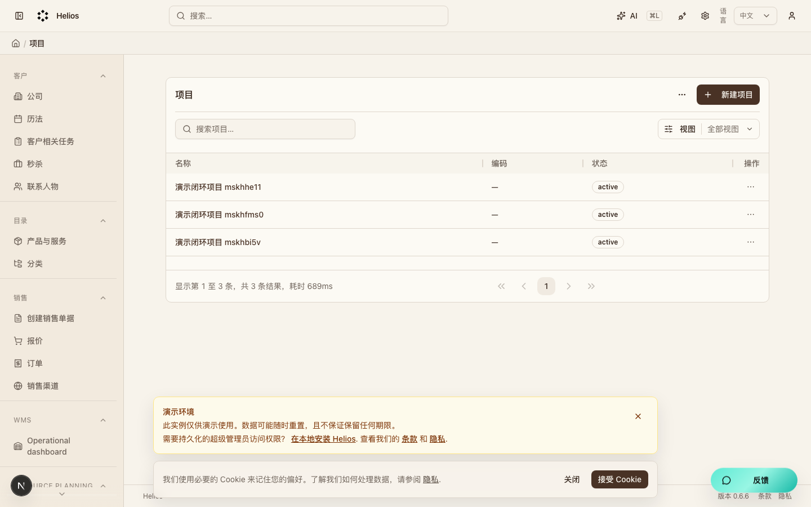
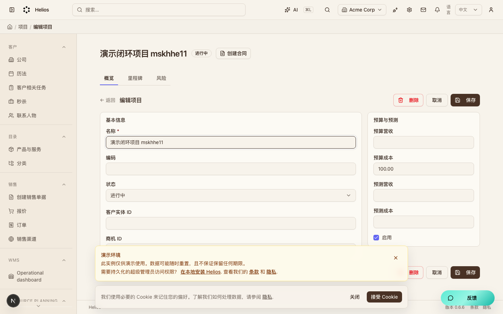
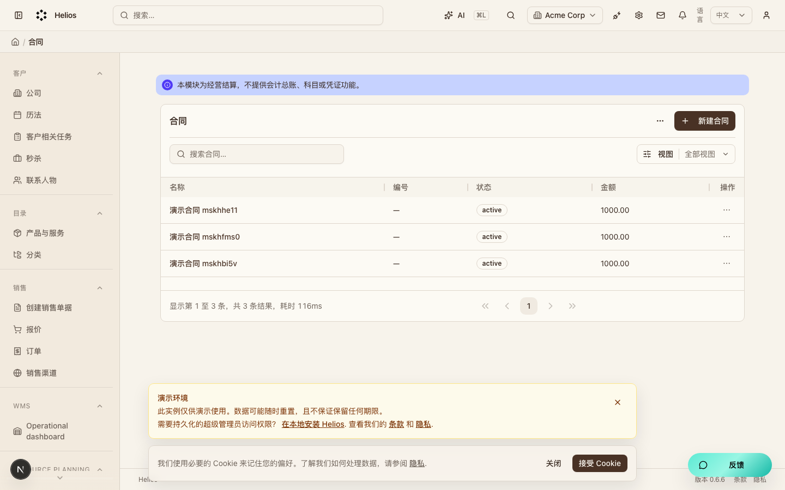
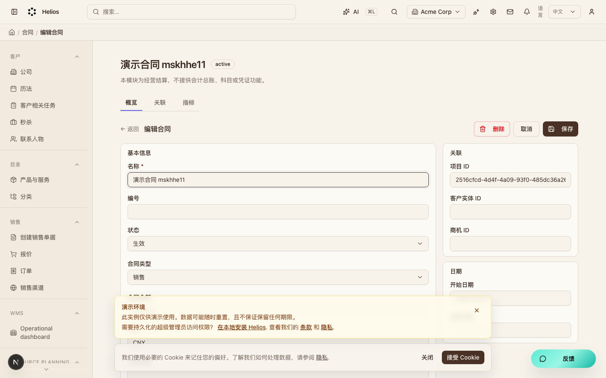
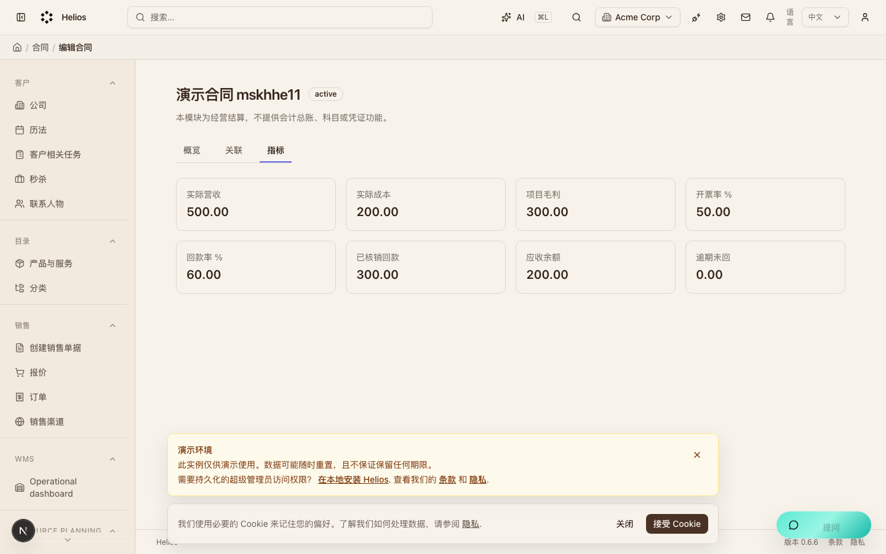
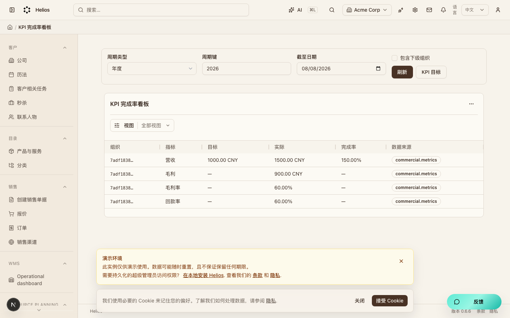
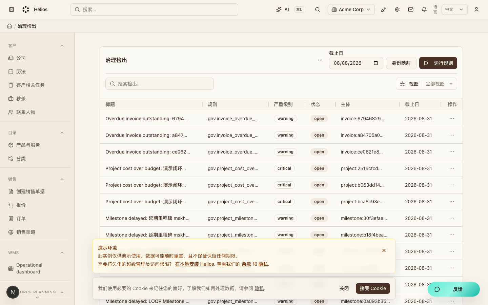

Helios Flow 经营闭环走查说明
本地真实数据截图 · 2026-08-08 · Markdown 版
闭环路径：客户/商机 → 项目(M5) → 合同/开票/核销(M6) → KPI(M7) → 治理检出(M7) → AI。
演示环境请打开 http://localhost:3000（不要用 127.0.0.1），账号
admin@acme.com / secret。
1. 项目列表（M5）
入口：/backend/projects。列表数据来自真实 API，不是静态假页。

2. 项目详情：创建合同
入口：/backend/projects/<id>。页签含概览 / 里程碑 / 风险。
标题旁「创建合同」会预填项目 ID 跳到合同新建页。

3. 合同列表（M6）
入口：/backend/commercial/contracts。
顶部标明：经营结算，不是总账，不提供科目或凭证。

4. 合同详情
页签：概览 / 关联 / 指标。关联可跳到营收、成本、开票、核销与项目。

5. 合同经营指标
数字来自 /api/commercial/metrics，与 PRD §7.9 一致。
| 指标 | 演示值 | 说明 |
|---|---|---|
| 实际营收 | 500.00 | 实际版营收合计 |
| 实际成本 | 200.00 | 实际版成本合计 |
| 项目毛利 | 300.00 | 营收 − 成本 |
| 开票率 | 50.00% | 500 ÷ 合同 1000 |
| 回款率 | 60.00% | 核销 300 ÷ 开票 500 |
| 应收余额 | 200.00 | 开票 − 核销 |

6. KPI 完成率（M7）
入口：/backend/insights/kpi。
数据来源标记为 commercial.metrics。
本演示年度营收目标 1000，实际约 1500，完成率 150%。

7. 治理检出（M7）
入口：/backend/governance/findings。
「运行规则」后写入检出，可点证据链到项目 / 开票等页面。

本地复现
yarn dev # 浏览器打开 http://localhost:3000 # 登录 admin@acme.com / secret npx playwright test --config .ai/qa/tests/playwright.config.ts \ TC-PRJ-001 TC-COM-001 TC-INS-001 TC-GOV-001 TC-LOOP-001 TC-AI-001